What should a person naturally do—tap, squeeze, step, turn, aim, wave, shout, or hold?
Engineering · Physical Computing · Design Lab
Inputs: Beyond the Button
A button is not a plastic circle. It is a decision made physical. Turn touch, pressure, distance, light, motion, sound—or almost any change in the world—into a clear, reliable command.
← Back to EngineeringBENCH UNIT 015V LOGIC
Waiting for input…Try the momentary button and latching switch.
MOMENTARY / HOLD
LATCHING / TOGGLE
Core idea
An input is a change the system can notice
The physical object can be a button, but it can also be a floor tile, zipper, beam of light, door magnet, microphone, fruit, steering wheel, or whole room. Good input design connects three layers:
What electrical change can detect it—contact, resistance, capacitance, light, sound, distance, or motion?
What should happen, and what feedback confirms the action was understood?
Signal vocabulary
Three ways an input can speak
Two states
Pressed/released, open/closed, HIGH/LOW. Best for clear decisions and events.
A range
Pressure, knob position, light level, or distance. Best when “how much?” matters.
Meaning over time
Hold, double-tap, rhythm, gesture, or sequence. Software turns changes into vocabulary.
Interactive circuit lab
Open, closed, momentary, and latching
A switch controls whether electricity has a complete path. Normally open (NO) means the path begins broken. Normally closed (NC) means it begins complete. Momentary controls return when released; latching controls remember their position.
+ 5V −
Released → circuit open → lamp off
Idea gallery
Twelve objects that can become “buttons”
Start with the action you want, then choose a sensor that makes that action legible to the circuit.
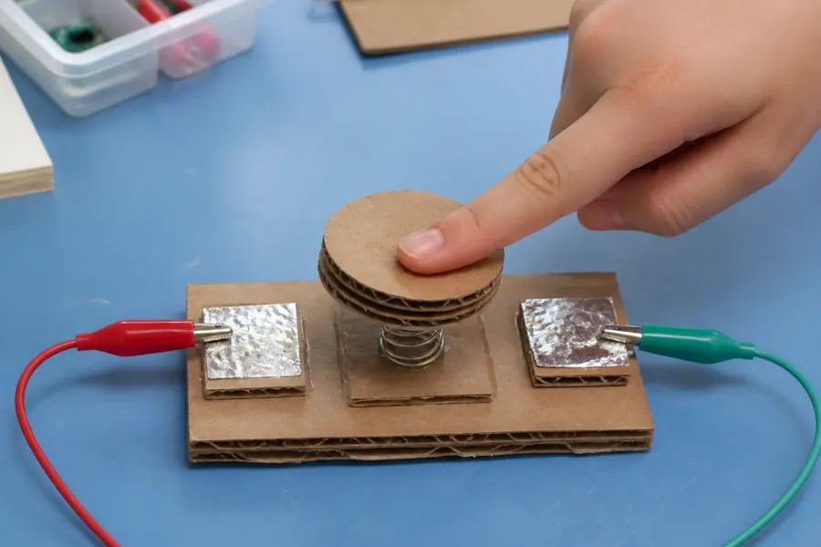
Cardboard arcade pad
Two foil surfaces touch when a springy cardboard top is pressed.
CONTACT · DIGITAL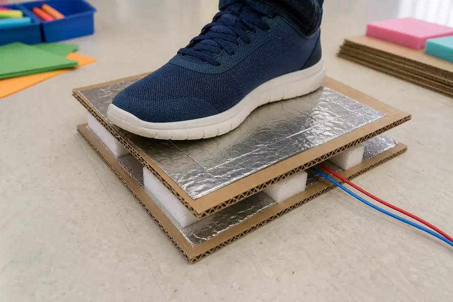
Pressure floor tile
Foam keeps foil layers apart until a foot compresses them.
PRESSURE · DIGITAL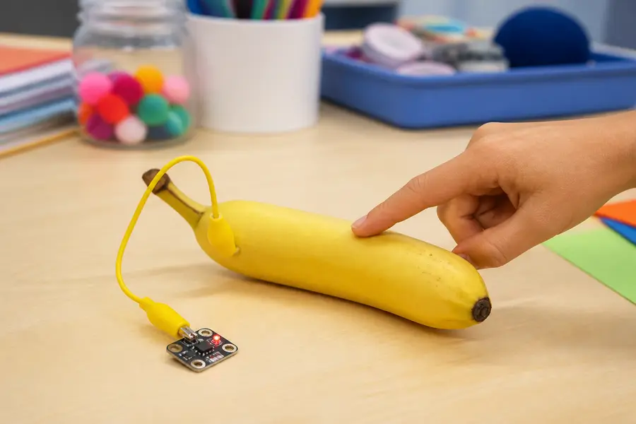
Touch object
Conductive fruit, clay, foil, or fabric becomes a capacitive touch pad.
CAPACITANCE · TOUCH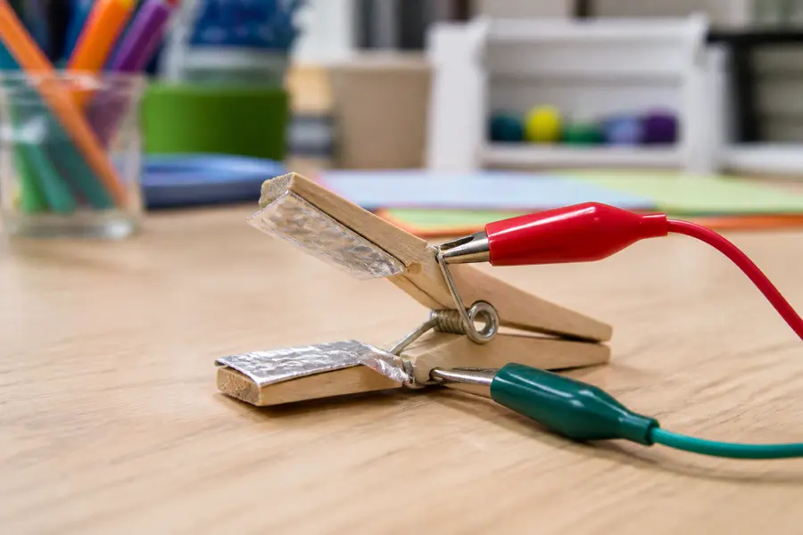
Clothespin switch
Foil-wrapped jaws close a circuit when clipped—or open it when squeezed.
CONTACT · NO OR NC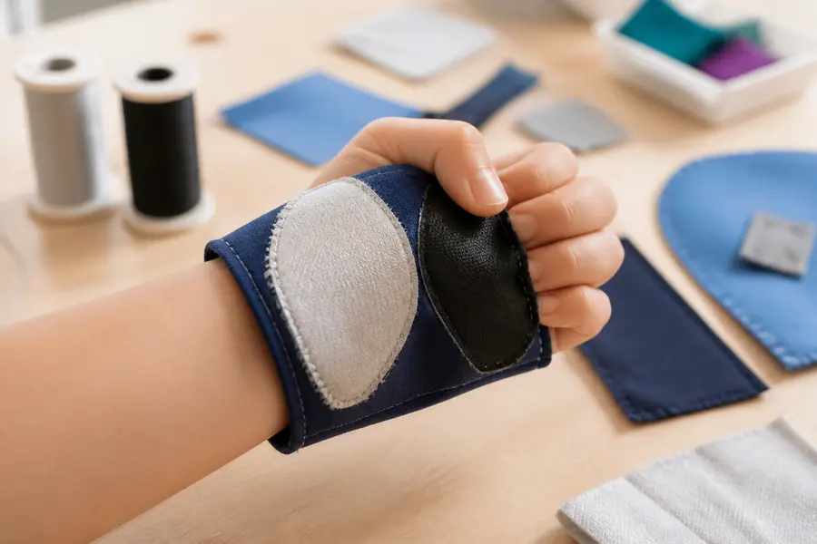
Wearable textile control
Conductive thread and fabric create soft squeeze, snap, or zipper switches.
CONTACT · WEARABLE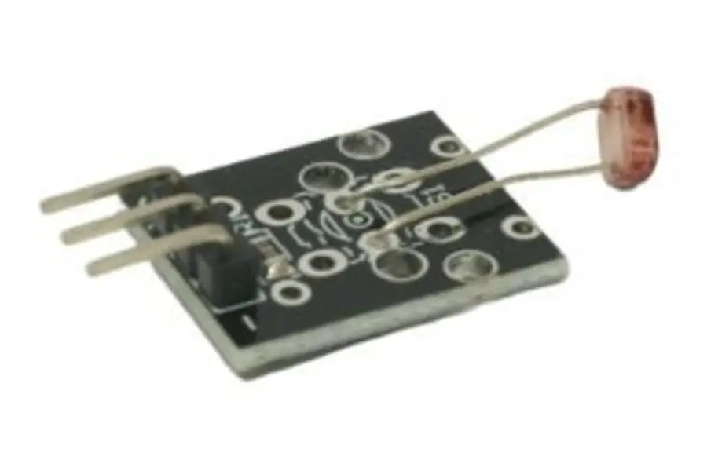
Shadow button
A hand covering a photoresistor crosses a light threshold.
LIGHT · ANALOG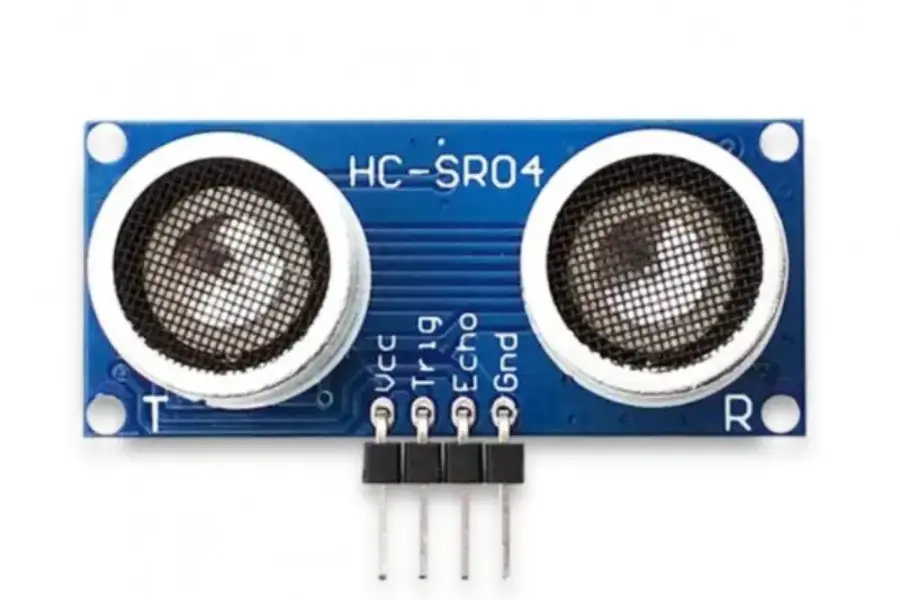
Invisible air button
An ultrasonic or infrared sensor triggers when a hand moves close.
DISTANCE · ANALOG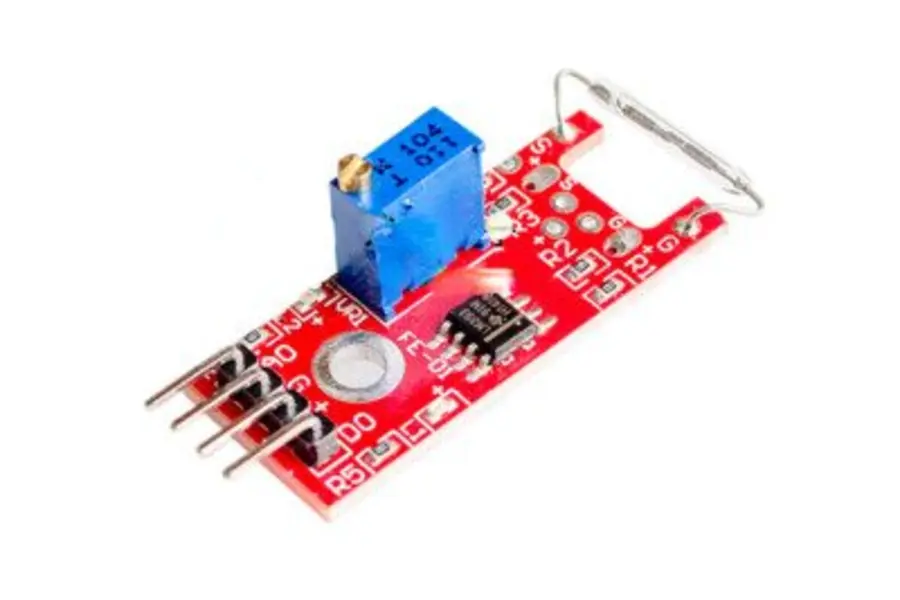
Magnetic door control
A reed switch notices when a door, drawer, or secret box opens.
MAGNETIC · DIGITAL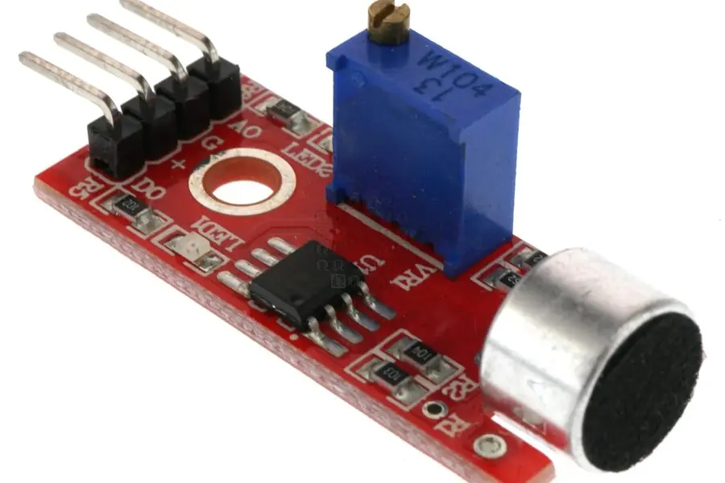
Clap or knock trigger
A microphone or vibration sensor detects a sound event or rhythm.
SOUND · PATTERN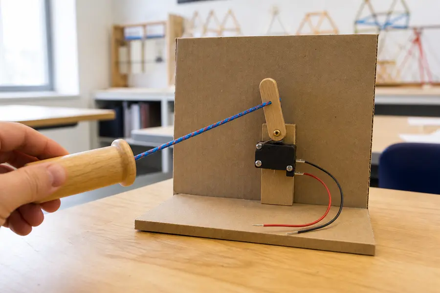
Pull-cord control
A string pulls a lever, microswitch, or conductive contact.
MECHANICAL · DIGITAL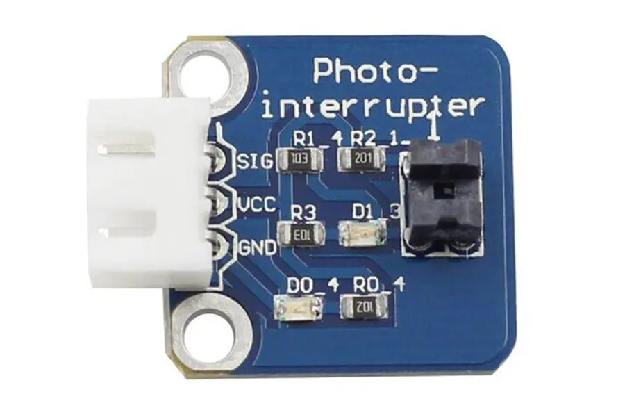
Beam-break gate
An object interrupts light traveling to a photo sensor.
LIGHT · EVENT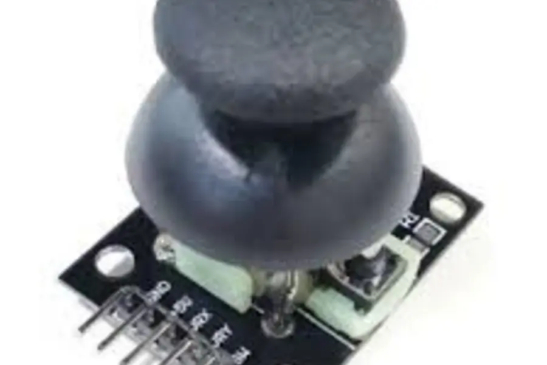
Turn, tilt, or roll
A knob, joystick, tilt switch, or accelerometer makes motion the control.
MOTION · RANGEBuild recipes
Make four low-cost inputs
Use only low-voltage classroom electronics. Test continuity before connecting a microcontroller.
Foil pressure pad
10 min- Tape foil to two pieces of cardboard and attach a wire to each.
- Place perforated craft foam between them so the foil stays apart.
- Press to join the foil through the openings; adjust foam thickness for sensitivity.
- Cover edges with tape for strain relief, leaving the center flexible.
Clothespin contact
5 min- Wrap each jaw in a separate piece of foil.
- Clip an alligator lead to each foil contact.
- Use it closed for a normally closed alarm loop.
- Add a paper spacer or object so removing it becomes the “press.”
Cardboard stomp button
15 min- Fold corrugated cardboard into a shallow springy dome.
- Place copper tape or foil contacts under the moving center and on the base.
- Add a stop so a hard stomp cannot crush the contacts.
- Make the target large, high-contrast, and non-slip.
Conductive object key
10 min- Choose conductive objects: foil shapes, graphite marks, metal tools, or moist fruit.
- Connect each to a capacitive-touch board or appropriate touch input.
- Keep leads short and recalibrate if triggers become unreliable.
- Give every object a light, sound, or screen response.
Safety boundary: Never connect homemade controls to wall power, outlets, appliances, or exposed mains wiring. Use battery-powered or USB microcontroller circuits only. Do not use a person’s body as a conductor in any circuit involving dangerous voltage or current.
Reliable wiring
Stop a disconnected pin from guessing
A digital input left electrically disconnected is floating; it can randomly read HIGH or LOW. A pull-up resistor gives the pin a known default. Most Arduino-style boards can enable one internally with INPUT_PULLUP.
| Button | Pin reading | Meaning |
|---|---|---|
| Released | HIGH | Default / inactive |
| Pressed | LOW | Active |
const int buttonPin = 2;
void setup() {
pinMode(buttonPin, INPUT_PULLUP);
pinMode(LED_BUILTIN, OUTPUT);
}
void loop() {
bool pressed =
digitalRead(buttonPin) == LOW;
digitalWrite(
LED_BUILTIN,
pressed ? HIGH : LOW
);
}
// INPUT_PULLUP reverses the logic:
// LOW means pressed.Signal cleanup
One press can look like many presses
Metal contacts physically bounce for a few milliseconds. Fast code may count several HIGH/LOW changes before the switch settles. Debouncing waits for the signal to hold still for a set window before it trusts a change. Generate a random bounce below, then drag the window and watch the same electrical noise get read differently.
Too short, and bounces sneak through as extra presses. Too long, and a real quick press can be missed entirely — try dragging to the maximum.
OSCILLOSCOPE · 20 msORANGE RAW / GREEN CLEAN
Raw events: 0Debounced events: 0
Design generator
The Input Forge
Combine an intended action, sensing method, and behavior. The best concept is not the most complicated one—it is the one people can discover, operate, and understand.
Stomp-to-launch floor control
STEP→PRESSURE CONTACT→MOMENTARY + LIGHT
Build a wide, non-slip pressure pad whose layered contacts close under a foot. Keep the output active while pressure is present and light the target immediately.
Prototype test: Can people find and trigger it without instructions? Can seated and standing users both reach it?
Human-centered design
A button must communicate
Shape, placement, label, lighting, or movement should suggest where and how to interact.
Offer a usable height, target size, force, and alternative for different bodies and mobility.
Prevent accidental activation, but do not demand perfect timing or extreme precision.
Respond immediately with visible, audible, or physical feedback—preferably more than one mode.
The same action should produce the same result. Dangerous actions deserve deliberate confirmation.
Make contacts inspectable, wires strain-relieved, and replaceable parts easy to reach.
Design challenge
Create a control no one expects
Build one input that controls an LED, sound, animation, motor, or game. It must use a physical action other than pressing a purchased plastic button.
Use cardboard, foil, tape, fabric, magnets, string, or a classroom sensor. Low voltage only.
Test it with three people. Record missed triggers, false triggers, and whether they understood the feedback.
Change one variable—size, spacing, threshold, debounce time, label, or feedback—and test again.
Quick check
Can you read the input?
1. What problem does INPUT_PULLUP solve?
2. A button wired from pin 2 to ground uses INPUT_PULLUP. What reading means “pressed”?
3. Why debounce a mechanical switch?
4. What makes a creative input successful?